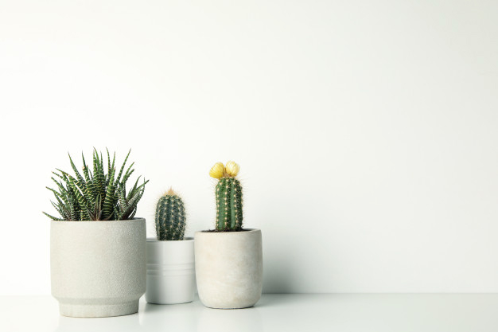

|

|
|
Cactus
Cactus flowers have several meaning. Their can symbolize sexual attraction or lust
between two people and also signify the loneness of the desert. Since it blooms in harsh
conditions, cactus flowers also symbolize the power of enduring all things, no matter
how hard they are.
|
|
|
|
Daisy
General Characteristics: This short-lived flowering plant has a small, bushy stem with a
single layer of white petals surrounding a deep yellow center. The flowers bloom during
the day and close at night, which is why the name "Daisy" comes from the word "Day's
Eye."
Meaning: The white daisy symbolizes purity, innocence, and faithful love. It also
represents new beginnings and hope.
Usage: It is commonly used as a decorative plant in gardens and homes, or in bouquets.
It can also be brewed into a tea, which has anti-anxiety properties and improves
digestion.
|